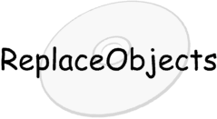
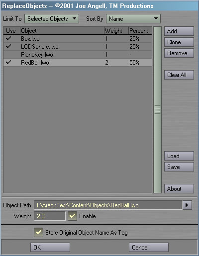
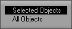
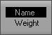

ReplaceObjects is a
plug-in for Lightwave 6.0 or greater. It allows you to replace multiple
objects with multiple other objects. The replacement can be from a random
selection of objects and weighted for more control, and the original object's
name and path can be stored as scene tags so you can return to the original
at any time. Two plug-ins are included,
Replace Objects and
Replace With Original Object.
This plug-in requires Lightwave 6.0 or greater.
To install ReplaceObjects, just follow these steps:
- If any copies of Layout are running, quit them now.
- Create a new directory in your Lightwave Plugins directory called TMPro and copy ReplaceObjects.p into it.
- Load Layout
- Select Add Plug-ins.
- Find and add ReplaceObjects.p. Layout should report that two plug-ins have been added.
- Quit Layout. This will update your Lightwave
config and ensure that everything works properly.
- The next time you run Layout, you can launch
the ReplaceObjects plug-ins from
the Generics pop-up in the Plug-in Options Panel, or assign them to keys
or buttons on the interface with Configure Keys and Configure Menus. Please
refer to your Lightwave documentation for more information. The plug-ins will be
the prefixed with TM_P under the Plugins heading of the
Configure Keys and Configure Menus panels.
ReplaceObjects includes the following plugins:
Replace Objects

Replace Objects allows you to replace any or all objects in the
scene with any other objects. These replacements are randomly selected from the swap list
based on each's weight. You use the plug-in by selecting the objects you want to replace,
activating the Replace Objects, selecting any number of swap objects and their
weights, and hitting OK to replace the selected objects with the swaps.
To use Replace Objects, you must first select the objects you want
to replace. Once you have some selected, activating the plug-in will open an interface
like the one above.

The Limit To pop-up determines if all objects will be replaced, or
only the selected objects.
The core of the plug-in is the Swap List. This contains a list of all
the swap objects you have entered. The first column of the list shows a check if the item is
enabled, and you can click in this column to change this state. The second column is the
filename of the swap object. The third column displays the weight of this swap object. The
final column shows the probability of this object being chosen as a replacement. Adding together
all the values in this column will total 100%. Disabled items will not contribute to this total,
and will display a dash instead.

The Sort By pop-up allows you to sort the swap list alphabetically
by object name or by weight.
Add will add a new swap object to the list. Clone will duplicate
the selected swap object. Remove will remove a swap object, and Clear All will
remove all swap objects and clear the list.
The Object Path field contains the path of the swap object. You can click
the button to the right of the field to open a file requester to select the object. If no path
is entered, the Swap List will display (original object), meaning that if this swap object
is chosen, the object won't be replaced.
The Weight field allows you to adjust the weight of the selected swap
object. By default, all objects have a weight of 1.0, which means they all have an equal chance
of being chosen as a replacement object. An object with a weight of 2.0 has twice as much chance
of being chosen as an object with a 1.0 weight. You can see these weights as a percentage in
the Swap List.
The Enable checkbox allows you to enable or disable a particular item.
If an item is disabled, it will act as if it wasn't there, allowing you to temporarilly ignore
unessesary items.
Store Original Object Name As Tag will keep a copy of the original object
name as a scene tag. Scene tags can be viewed using the Comments Generic plug-in include with
Lightwave. Storing the original object names allows you to use the Replace With Original
Object plug-in to reload the original item. The tag starts with the keyword "OriginalItem",
then a 0 if it was a null or a 1 if it was an object, and finally the path to the object, or the
original name of the null object. If this tag already exists for this object, it will be replaced
with the new tag. If this option is left unchecked, then no tags will be modified or created.
Save can be used to store the current swap list to disk for later use as
an .RPS file. You can load these settings back in with the Load button.
About, as you'd expect, will pop up some information about this plug-in.
Once you have all the options set up, OK will begin replacing objects.
A progress bar will show you how the replacement is going. If you don't want to perform the
replacement, you can hit Cancel instead.
Replace With Original Object
This plug-in reverses the effects of Nullify and Replace Objects when
Store Original Object Name As Tag was enabled. It replaces each selected object with the
object or null object specified by the "OriginalItem" tag. The existing tag will then be replaced
with the original name of the item we're replacing, so you can call this over and over again to swap
between the orignal item and the replacement. If the tag doesn't exist, then this will do nothing.
Revision History
- 04-22-01 First public release
Bugs? Feature requests? Can't get it to work? Feel free to contact us if
you're having any problems or want to request a feature.
All programs presented here are Copyright ©2000-2002 TM Productions, All Rights Reserved.
Please contact us if you would like to distribute any of these programs,
or if you find any particularly useful.
|